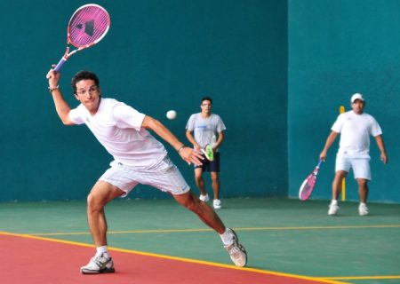
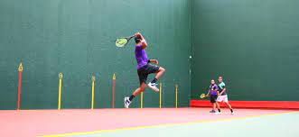

Para jugar frontenis se requiere técnica, reflejos y el equipamiento adecuado. El golpeo de la pelota, la posición en la cancha y la elección de la raqueta son claves para destacar en este deporte.
Consejos para jugadores:
- Practica la anticipación: observa el movimiento de tu rival y la trayectoria de la pelota.
- Trabaja la resistencia física: el frontenis exige velocidad y agilidad constante.
- Mejora tu técnica de golpeo con ejercicios específicos de muñeca y brazo.
- Utiliza raquetas y pelotas adecuadas a tu nivel y modalidad (olímpica o preolímpica).
- Juega en diferentes tipos de frontón para adaptarte a distintas superficies y rebotes.
Modalidades y reglas básicas:
- En la modalidad olímpica se usan pelotas más rápidas y raquetas más ligeras.
- El saque debe golpear primero el muro frontal y luego rebotar en el suelo dentro de la zona válida.
- Los partidos pueden ser a puntos o a sets, según el torneo.
- El frontenis fomenta el juego limpio y el respeto entre rivales.


Aspectos técnicos y equipamiento
| Aspecto |
Detalle |
| Golpeo |
Se utilizan golpes de derecha, revés y remate, buscando precisión y potencia. |
| Posición |
El jugador debe moverse rápido y anticipar el rebote de la pelota. |
| Raqueta |
Ligera, con encordado resistente para pelotas de goma. |
| Pelota |
De goma especial, diseñada para velocidad y rebote. |
| Indumentaria |
Ropa deportiva cómoda y zapatillas con buen agarre. |
¿Te interesa la historia? Vuelve a la sección de Historia y Origen.